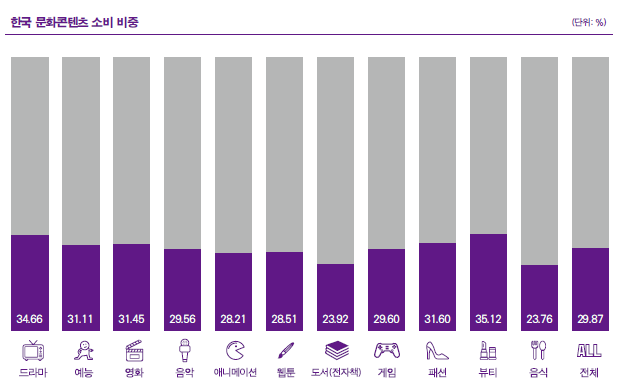
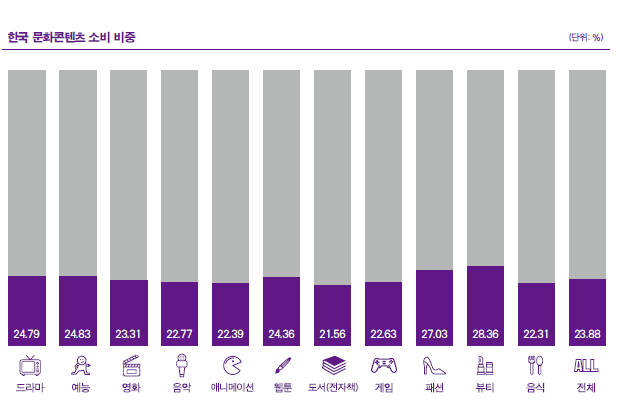
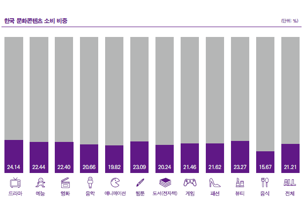
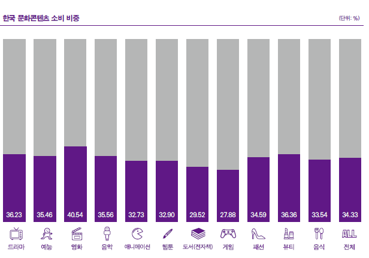
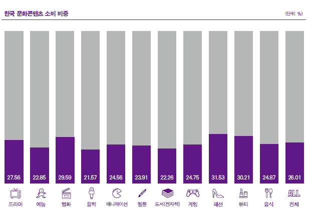

한류 콘텐츠의 소비 지분
아시아·오세아니아
아시아·오세아니아 지역의 전체 문화콘텐츠 소비량 대비 한류콘텐츠 소비량 비중은 29.87%였고, 비중이 가장 높은 콘텐츠는 뷰티(35.12%)인 것으로 조사됐다. 그 다음으로 드라마, 패션, 영화, 예능 순으로 비중이 높은 것으로 나타나 전반적으로 한국 영상콘텐츠와 라이프스타일 제품에 대한 소비가 활발한 것을 알 수 있었다. 능의 경우 높은 호감도에 비해 대중적 인기는 상대적으로 떨어지는 것으로 나타난 반면, 음악의 경우 호감도는 낮게 조사됐지만 대중적으로 상당한 인기를 얻고있었다.
미주
미주의 전체 문화콘텐츠 소비량 대비 한국 콘텐츠 소비량 비중은 23.88%로 비중이 가장 높은 장르는 아시아·오세아니아와 마찬가지로 뷰티였다(28.36%). 이어 패션, 예능, 드라마, 웹툰, 영화 순으로 비중이 높은 것으로 조사됐고 전반적인 한국 문화콘텐츠 소비 비중이 다른 권역과 비교해 두 번째로 낮았다.
유럽
유럽의 전체 문화콘텐츠 소비량 대비 한국 콘텐츠 소비량 비중은 21.21%로 비중이 가장 높은 장르는 드라마였다(24.14%). 유럽은 콘텐츠별로 15%에서 24%의 한국 콘텐츠 소비 비중을 기록해 5개 권역 중 한류콘텐츠를 가장 적게 이용하는 것으로 나타났다.
중동
중동 지역의 전체 문화콘텐츠 소비량 대비 한국 콘텐츠 소비량 비중은 34.33%로 비중이 가장 높은 콘텐츠는 영화였다(40.54%). 다음으로 뷰티(36.36%), 드라마(36.23%), 음악(35.56%), 예능(35.46%)의 비중이 35%를 넘어 한류콘텐츠 중 이들에 대한 소비가 비교적 활발한 것으로 조사됐다.
아프리카
아프리카의 전체 문화콘텐츠 소비량 대비 한국 콘텐츠 소비량 비중은 26.01%로 5개 권역 전체 평균(27.4%)보다 낮았고 그 비중이 가장 높은 장르는 패션이었다(31.53%). 다음으로 뷰티(30.21%), 영화(29.59%), 드라마(27.56%)에 대한 소비가 비교적 활발한 것으로 조사됐다.